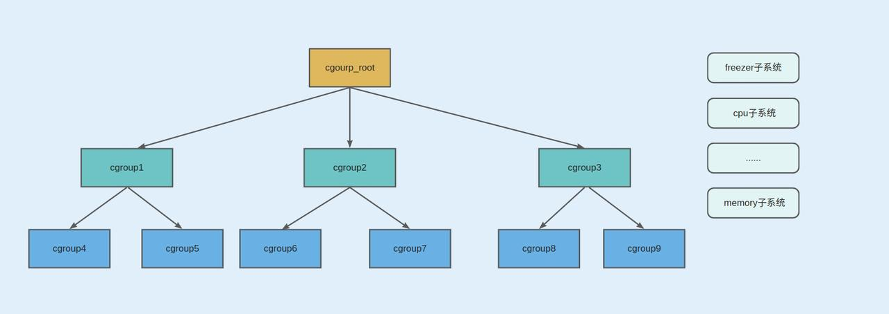
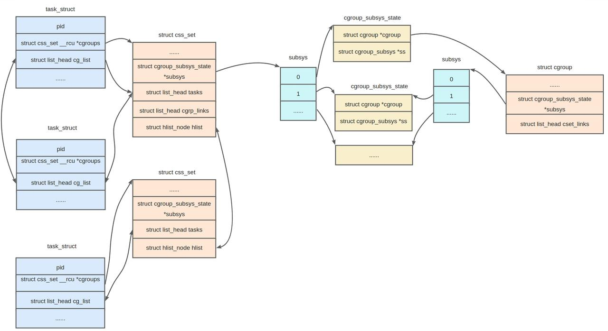
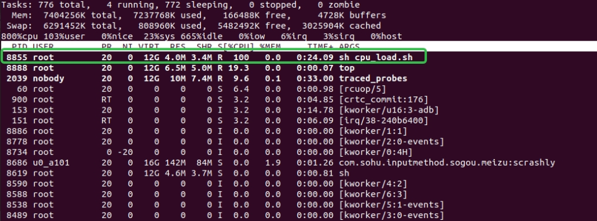
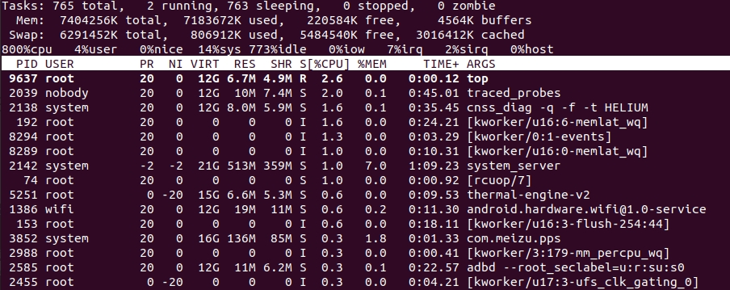
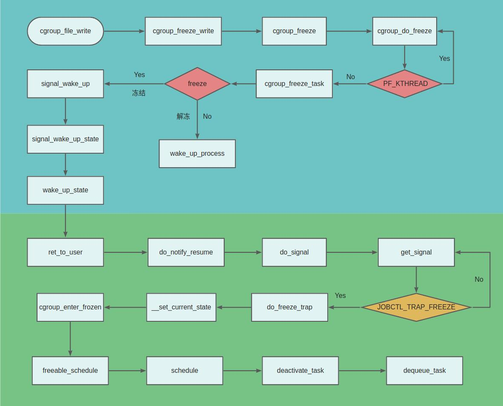
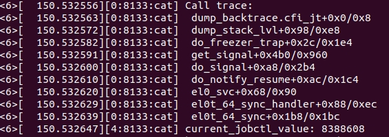

kernel version：5.15.119
cpu architecture：ARM64
cgroup version：cgroup v2
一、背景介绍
cgroup 最初由 Google 工程师 Paul Menage 和 Rohit Seth 在 2006 年提出，是一种细粒度资源控制的Linux内核机制。于 2007 年合并到 Linux 内核主线中。然而 Google 原生系统直到 Android 11 或更高版本上才支持 CACHE 应用的 CPU 冻结功能。当应用切换到后台并且没有其他活动时，系统会在一定时间内通过状态判断，将进程 ID 迁移到冻结的 cgroup 节点上，实现冻结 CACHE 应用。这项功能可以减少活跃缓存应用在后台存在时所消耗的 CPU 资源，从而达到节电的目的。当应用再次切换到前台时，系统会将该应用的进程解冻，以实现快速启动。
对于后台进程冻结，有两套方案，一是 cgroup freezer，二是内核信号 signal SIGSTOP 和 SIGCONT，国内很多手机厂商其实是早于 Android 做进程冻结方案的。而使用 cgroup freezer 方案更成熟更完善，接入后其实仅仅第一步，还有 binder 的 BINDER_FREEZE 冻结，framework层还有很多需要特殊场景，如后台下载、应用中使用桌面小组件、正在播放音频等等。
cgroup中的Freezer子系统可以用来暂停或恢复控制组中的进程，主要作用如下：
- 暂停进程：冻结的进程会被暂停，其所有线程的执行将被停止，包括应用程序的主线程以及任何后台线程。
- 资源释放：冻结进程占用的资源，例如CPU、内存资源会被释放。这些资源将被系统重新分配给其他需要执行的进程或系统服务
- 功耗节省：被冻结的进程不会在后台运行，因此系统在休眠期间不会被频繁唤醒，可以节省设备的电池消耗。
- 快速恢复：冻结的进程可以快速恢复其执行状态。当需要重新激活进程时，系统可以迅速将其恢复到之前的运行状态，而无需重新启动或加载应用程序。 冻结进程并不会终止进程的执行或销毁应用程序。冻结只是暂时挂起进程，以优化资源使用。一旦系统需要再次运行该进程（例如用户重新打开应用程序或系统需要其提供服务），它会被解冻并恢复运行。
进程冻结是Android系统中重要的资源管理策略，也是目前主流手机厂商常用的后台管控策略之一，它有助于提高系统性能，同时最大限度地节省设备的资源和电量消耗。下面我们针对 cgroup freezer 的底层实现，看 Linux 内核是如何支撑 Android 的墓碑机制功能的。
二、cgroup相关组件
1. 检查cgroup 2 文件系统是否已经加载
1 | linux:/ # cat /proc/filesystems | grep cgroup2 |
2. 挂载
可以用如下命令挂载cgroup文件系统到d目录1
2linux:/ # mount -t cgroup2 none d
linux:/ #
系统启动后，默认system已经将cgroup v2的文件系统挂载到/sys/fs/cgroup下1
2
3
4
5
6linux:/ # mount | grep cgroup
none on /dev/blkio type cgroup (rw,nosuid,nodev,noexec,relatime,blkio)
none on /sys/fs/cgroup type cgroup2 (rw,nosuid,nodev,noexec,relatime,memory_recursiveprot)
none on /dev/cpuctl type cgroup (rw,nosuid,nodev,noexec,relatime,cpu)
none on /dev/cpuset type cgroup (rw,nosuid,nodev,noexec,relatime,cpuset,noprefix,release_agent=/sbin/cpuset_release_agent)
none on /dev/memcg type cgroup (rw,nosuid,nodev,noexec,relatime,memory)
3. cgroup的父子关系
初始状态下只有一个root cgroup根节点，所有进程都归属于这个cgroup，可以使用mkdir指令创建新的子cgroup。cpu、memory、freezer等控制资源是自顶向下（top-down）分配的，只有当一个 cgroup 从 parent 获得了某种资源，它才可以继续向下分发。这意味着所有非根”cgroup.subtree_control”文件只能包含在父级的”cgroup.subtree_control”文件中启用的控制器。只有在父级cgroup中启用了控制器时，子级cgroup才能启用控制器，如果一个或多个子级已经启用了某个控制器，则不能禁用该控制器。子孙cgroup数量有限，内核中使用cgroup.max.depth和cgroup.max.descendants来限制，关系图如下：

4. 进程与cgroup的关系
cgroup.procs是cgroup与task进程绑定的接口，当读取该文件时，它会逐行列出属于该cgroup的所有进程的PID。将进程的PID写入到cgroup.procs中即可将目标PID进程绑定到该cgroup。进程与cgroup是多对多的关系，一个进程可以绑定到多个cgroup中，一个cgroup可以被多个进程绑定。在kernel中进程的数据结构task_struct与cgroup有关的是如下cgroups、cg_list两个成员:1
2
3
4
5
6
7
8
9
10
11
12
13
14struct task_struct {
...
/* Control Group info protected by css_set_lock: */
struct css_set __rcu *cgroups;
/* cg_list protected by css_set_lock and tsk->alloc_lock: */
struct list_head cg_list;
...
}
4.1 css_set数据结构
task_struct中的*cgroups指针指向了一个css_set结构，而css_set是用来存储与进程相关的cgroups信息，定义如下：1
2
3
4
5
6
7
8
9
10
11
12
13
14
15
16
17
18
19
20
21
22
23
24
25
26
27
28
29
30
31
32
33
34/*
* A css_set is a structure holding pointers to a set of
* cgroup_subsys_state objects. This saves space in the task struct
* object and speeds up fork()/exit(), since a single inc/dec and a
* list_add()/del() can bump the reference count on the entire cgroup
* set for a task.
*/
struct css_set {
/*
* Set of subsystem states, one for each subsystem. This array is
* immutable after creation apart from the init_css_set during
* subsystem registration (at boot time).
*/
struct cgroup_subsys_state *subsys[CGROUP_SUBSYS_COUNT]; //保存子系统状态的集合，初始化后不可修改
...
struct list_head tasks; //用来链接所有使用此css_set的task_struct集合
/*
* List running through all cgroup groups in the same hash
* slot. Protected by css_set_lock
*/
struct hlist_node hlist; //将所有的css_set组成一个hash表
/*
* List of cgrp_cset_links pointing at cgroups referenced from this
* css_set. Protected by css_set_lock.
*/
struct list_head cgrp_links; //将这个css_set对应的cgroup链接到一起
...
};
4.2 cgroup_subsys_state数据结构
每个子系统都有属于自己的资源控制统计信息结构，而且每个cgroup中都绑定一个这样的结构，这种资源控制统计信息结构就是通过 cgroup_subsys_state 结构体实现的，其定义如下：1
2
3
4
5
6
7
8
9
10
11
12
13
14
15
16
17
18
19
20
21
22
23
24
25
26
27
28
29
30
31
32/*
* Per-subsystem/per-cgroup state maintained by the system. This is the
* fundamental structural building block that controllers deal with.
*
* Fields marked with "PI:" are public and immutable and may be accessed
* directly without synchronization.
*/
struct cgroup_subsys_state {
/* PI: the cgroup that this css is attached to */
struct cgroup *cgroup; //连接到对应的cgroup
/* PI: the cgroup subsystem that this css is attached to */
struct cgroup_subsys *ss; //归属于哪个子系统
/*
* PI: Subsys-unique ID. 0 is unused and root is always 1. The
* matching css can be looked up using css_from_id().
*/
int id;
unsigned int flags;
/* percpu_ref killing and RCU release */
struct work_struct destroy_work;
struct rcu_work destroy_rwork;
/*
* PI: the parent css. Placed here for cache proximity to following
* fields of the containing structure.
*/
struct cgroup_subsys_state *parent; 父css
};
4.3 cgroup数据结构
cgroup主要用来控制进程组对各种资源的使用1
2
3
4
5
6
7
8
9
10
11
12
13
14
15
16
17
18
19
20
21
22
23
24
25
26
27
28
29
30
31
32
33
34
35
36
37
38
39
40
41
42
43
44
45
46
47
48
49
50struct cgroup {
/* self css with NULL ->ss, points back to this cgroup */
struct cgroup_subsys_state self;
unsigned long flags; /* "unsigned long" so bitops work */
/*
* The depth this cgroup is at. The root is at depth zero and each
* step down the hierarchy increments the level. This along with
* ancestor_ids[] can determine whether a given cgroup is a
* descendant of another without traversing the hierarchy.
*/
int level;
/* Maximum allowed descent tree depth */
int max_depth;
...
struct cgroup_root *root; //
/*
* List of cgrp_cset_links pointing at css_sets with tasks in this
* cgroup. Protected by css_set_lock.
*/
struct list_head cset_links; //指向 css_sets 的 cgrp_cset_links 列表，其中包含此 cgroup 中的任务。
/*
* On the default hierarchy, a css_set for a cgroup with some
* susbsys disabled will point to css's which are associated with
* the closest ancestor which has the subsys enabled. The
* following lists all css_sets which point to this cgroup's css
* for the given subsystem.
*/
struct list_head e_csets[CGROUP_SUBSYS_COUNT];
/*
* If !threaded, self. If threaded, it points to the nearest
* domain ancestor. Inside a threaded subtree, cgroups are exempt
* from process granularity and no-internal-task constraint.
* Domain level resource consumptions which aren't tied to a
* specific task are charged to the dom_cgrp.
*/
...
/* Used to store internal freezer state */
struct cgroup_freezer_state freezer; //用于存储内部freezer状态
};
从task到其所属的cgroup之间是没有直接指针相连接的，但是task可以通过一个媒介来获取其所属的cgroup，这个媒介就是css_set和cgroup_subsys_state。通过task_struct -> cgroups -> subsys[ssid] ->cgroup即可访问到管理对应子系统的cgroup。之所以这么设计是因为获取子系统状态的操作预计会频繁发生，而且是在性能关键代码中。然而需要一个task实际的cgroup来执行的操作（尤其是task在cgroups之间迁移的操作）则并没有那么常见。task_struct中的cg_list则是用来连接使用同一个css_set的task的链表，css_set通过tasks来遍历访问此链表。
对应关系图

5. freeze子系统使用
做一个小实验：后台运行一个cpu_load.sh的脚本使一个cpu 负载达到100%

PID为8855的进程即我们在跑的脚本，此时它的进程状态为R1
2linux:/ # ps -Ae | grep 8855
root 8855 8619 12470528 4160 0 0 R sh
在sys/fs/cgroup/目录下面新建一个an_test文件夹，将8855进程加入到an_test组中冻结1
2
3
4
5
6
7
8linux:/sys/fs/cgroup # mkdir an_test
linux:/sys/fs/cgroup #
linux:/sys/fs/cgroup # cd an_test/
linux:/sys/fs/cgroup/an_test #
linux:/sys/fs/cgroup/an_test # echo 8855 > cgroup.procs
linux:/sys/fs/cgroup/an_test #
linux:/sys/fs/cgroup/an_test # echo 1 > cgroup.freeze
linux:/sys/fs/cgroup/an_test #
这个时候PID为8855的进程已经被我们的cgroup进程组给冻结掉，可以查看进程状态已经从R 切换到S1
2linux:/ # ps -Ae | grep 8855
root 8855 8619 12470528 4160 do_freezer_trap 0 S sh
观察上面的WCHAN可以看到冻结的进程是阻塞在内核的do_freezer_trap函数中 , do_freezer_trap是cgroup freezer中最核心的函数，后面小节会分析。如下是8855进程的调用栈:1
2
3
4
5
6
7
8
9
10
11
12
13
14
15
16
17linux:/ # ps -A | grep do_freezer
u0_a224 12571 1334 17204188 92476 do_freezer_trap 0 S com.baidu.searchbox:widgetProvider
u0_a224 24866 1334 17415500 102640 do_freezer_trap 0 S com.baidu.searchbox:bdservice_v1
u0_a224 32727 1334 35535376 106212 do_freezer_trap 0 S com.baidu.searchbox
linux:/proc/8855 # cat stack
[<0>] __switch_to+0x28c/0x4dc
[<0>] do_freezer_trap+0xac/0x1bc
[<0>] get_signal+0x4b8/0x940
[<0>] do_signal+0xe0/0x2b4
[<0>] do_notify_resume+0xac/0x1c4
[<0>] el0_interrupt+0x8c/0x13c
[<0>] __el0_irq_handler_common+0x1c/0x2c
[<0>] el0t_64_irq_handler+0x14/0x24
[<0>] el0t_64_irq+0x1b8/0x1bc
linux:/proc/8855 #
后台查看8855被冻结之后，cpu_load.sh进程已经不在后台运行，CPU的整体loading也降低下来

上面是使用cgroup freeze功能冻结进程的过程，下面小节来分析其实现原理。
三、cgroup freezer子系统的实现
1. cgroup冻结整体流程

内核通过了一个比较巧妙的方式实现了冻结流程。它首先为该进程设置了一个信号pending标志TIF_SIGPENDING，但并不向该进程发送实际的信号，然后通过ipi唤醒该进程执行。由于ipi会进行进程内核的中断处理流程，当其处理完成后，会调用ret_to_user函数返回用户态，而该函数会调用信号处理函数检查是否有pending的中断需要处理，由于先前已经设置了信号的pending标志，因此会执行信号处理流程。在信号处理流程中检查进程冻结相关的全局变量是否设置，然后调用__set_current_state将task 设置为interrupt状态 将task 挂起，执行schedule() 让出cpu，进行上下文切换。
2. 设置freezer冻结与解冻
前面实验通过对cgroup目录cgroup.freeze值的修改，来完成了freezer对task限制的设置。将cgroup.freeze值置为1则该cgroup里的进程会全被freeze，置为0则会被unfreeze。这个小节来看看这个设置过程。当用户读写cgroup.freeze这个文件的时候，cgroup中调用的是cgroup_freeze_write函数，内核数据结构如下
1 | /* cgroup core interface files for the default hierarchy */ |
文件读写处理函数cgroup_freeze_write函数调用cgroup_freeze_task将cgroup中所有task的jobctl位掩码置位为JOBCTL_TRAP_FREEZE，然后将要冻结的task设置为TIF_SIGPENDIN状态，如果是解冻这里会将task中的jobctl位掩码JOBCTL_TRAP_FREEZE清除，然后执行wake_up_process将task唤醒。调用链路如下：1
2
3
4
5
6
7
8
9
10
11
12
13
14
15
16vfs_write
|->kernfs_fop_write_iter
|->cgroup_file_write
|->cgroup_freeze_write
|->cgroup_kn_lock_live //获得文件所在的目录的cgroup实体
|->cgroup_freeze
|->css_for_each_descendant_pre //循环体里对当前目录以及每个子孙目录所代表cgroup实体执行cgroup_do_freeze函数
|->cgroup_do_freeze
|->set_bit //将cgroup及子孙cgroup设为freeze状态
|->cgroup_freeze_task
|->signal_wake_up
|->signal_wake_up_state
|->wake_up_state
|->try_to_wake_up
|->kick_process //使进程陷入内核态，为返回用户态处理冻结信号做准备
|->wake_up_process
这里分析几个关键的函数cgroup_freeze、cgroup_do_freeze、cgroup_freeze_task。cgroup_freeze_write会调用到cgroup_kn_lock_live获取要冻结目录的cgroup实体，然后再调到cgroup_freeze中将父cgroup的冻结状态传给各子孙cgroup, cgroup_freeze定义在kernel/cgroup/freezer.c中
1 | void cgroup_freeze(struct cgroup *cgrp, bool freeze) |
cgroup_freeze中通过css_for_each_descendant_pre循环将父cgroup的freeze状态传递到各子孙cgroup中，父cgroup被freeze或者unfreeze，其目录下的子cgroup也会被freeze或者unfreeze，执行动作是在函数cgroup_do_freeze中，cgroup_do_freeze会循环遍历cgroup中的task执行cgroup_freeze_task函数做下一步的冻结/解冻操作。如果遇到内核线程则直接跳出该次循环。注意在信号的设计机制里内核线程不会收到信号，信号是针对用户线程或者进程的一种异步机制。所以在cgroup的冻结流程里没有内核线程的处理，但在suspend的冻结中有针对内核线程的处理，有兴趣的可以去看看。这里只讲cgroup中的冻结。cgroup_do_freeze实现如下：1
2
3
4
5
6
7
8
9
10
11
12
13
14
15
16
17
18
19
20/*
* Freeze or unfreeze all tasks in the given cgroup.
*/
static void cgroup_do_freeze(struct cgroup *cgrp, bool freeze)
{
...
css_task_iter_start(&cgrp->self, 0, &it);
while ((task = css_task_iter_next(&it))) {
/*
* Ignore kernel threads here. Freezing cgroups containing
* kthreads isn't supported.
*/
if (task->flags & PF_KTHREAD) //遇到内核线程直接跳出该次循环
continue;
cgroup_freeze_task(task, freeze);
}
css_task_iter_end(&it);
...
}
cgroup_freeze_task中会设置task的jobctl位掩码为JOBCTL_TRAP_FREEZE，然后调用signal_wake_up使进程陷入内核态，只有陷入内核态，后面返回用户态才能够处理冻结信号，cgroup_freeze_task实现如下：1
2
3
4
5
6
7
8
9
10
11
12
13
14
15
16
17
18/*
* Freeze or unfreeze the task by setting or clearing the JOBCTL_TRAP_FREEZE
* jobctl bit.
*/
static void cgroup_freeze_task(struct task_struct *task, bool freeze)
{
...
if (freeze) {
task->jobctl |= JOBCTL_TRAP_FREEZE; //设置冻结标志位
signal_wake_up(task, false);
} else {
task->jobctl &= ~JOBCTL_TRAP_FREEZE; //清除冻结标志位
wake_up_process(task); //将已经冻结的进程唤醒，选择合适的CPU来运行，这里就是解冻
}
unlock_task_sighand(task, &flags);
}
signal_wake_up会调用signal_wake_up_state先为进程设置TIF_SIGPENDING标志，表明该进程有延迟的信号要等待处理。然后再调用 wake_up_state()唤醒目标进程，如果目标进程在其他的CPU上运行，wake_up_state()将返回0，此时调用 kick_process()向该CPU发送一个处理器核间中断。当中断返回前时，直接调用do_notify_resume()处理该进程的信号。signal_wake_up_state函数实现如下:1
2
3
4
5
6
7
8
9
10
11
12
13
14
15
16
17
18
19
20
21
22
23
24/*
* Tell a process that it has a new active signal..
*
* NOTE! we rely on the previous spin_lock to
* lock interrupts for us! We can only be called with
* "siglock" held, and the local interrupt must
* have been disabled when that got acquired!
*
* No need to set need_resched since signal event passing
* goes through ->blocked
*/
void signal_wake_up_state(struct task_struct *t, unsigned int state)
{
set_tsk_thread_flag(t, TIF_SIGPENDING);
/*
* TASK_WAKEKILL also means wake it up in the stopped/traced/killable
* case. We don't check t->state here because there is a race with it
* executing another processor and just now entering stopped state.
* By using wake_up_state, we ensure the process will wake up and
* handle its death signal.
*/
if (!wake_up_state(t, state | TASK_INTERRUPTIBLE))
kick_process(t);
}
根据signal_wake_up_state函数的代码逻辑，如果目标进程不在runqueue上，则wake_up_state函数会将其放在runqueue上并返回true；如果进程已经处于runqueue上了，则返回false，才会执行kick_process。下面我们来看看kick_process函数的实现：1
2
3
4
5
6
7
8
9
10
11
12
13
14
15
16
17
18
19
20
21
22
23/***
* kick_process - kick a running thread to enter/exit the kernel
* @p: the to-be-kicked thread
*
* Cause a process which is running on another CPU to enter
* kernel-mode, without any delay. (to get signals handled.)
*
* NOTE: this function doesn't have to take the runqueue lock,
* because all it wants to ensure is that the remote task enters
* the kernel. If the IPI races and the task has been migrated
* to another CPU then no harm is done and the purpose has been
* achieved as well.
*/
void kick_process(struct task_struct *p)
{
int cpu;
preempt_disable();
cpu = task_cpu(p);
if ((cpu != smp_processor_id()) && task_curr(p))
smp_send_reschedule(cpu);
preempt_enable();
}
函数的注释已经写得很清楚，kick_process的目的就是让进程陷入内核态。而smp_send_reschedule本质就是给进程所在的核发个IPI中断，从而导致正在运行的进程被打断陷入内核态。到这里cgroup这边freeze的前置工作已经做完，所有即将进入freeze的task已经被kernel置位为JOBCTL_TRAP_FREEZE和处于TIF_SIGPENDING的状态，真正执行进程冻结挂起的操作是放在signal的信号处理这边来执行。
3. 冻结信号处理
信号真正得到执行的时机是进程执行完异常/中断/系统调用，从内核态返回到用户态的时刻，所以永远不要指望你所发送的信号能像硬件中断那般随时处理，进程信号处理只是异步通信机制，没有像真正的硬件中断那样能随时改变cpu的执行流。正常的用户进程是会频繁的在用户态和内核态之间切换的 (这种切换包括：系统调用，缺页异常，系统中断..)，所以信号能很快得到执行。
前面小节已经讲过cgroup组中要被freeze的task已经将其_TIF_SIGPENDING置位。进程的_TIF_SIGPENDING置位，表明该进程有pending信号需要处理。因此会执行信号处理流程。
信号处理过程中会检查task中的freeze标志位已设置，故进程将执行关键冻结函数do_freeze_trap。调用链路如下：
1 | exit_to_user_mode |
调用栈打印：

这里分析几个关键函数do_notify_resume、get_signal、do_freezer_trap、freezable_shedule。函数do_notify_resume定义在arch/arm64/kernel/signal.c中，该函数检查如果当前任务设置了标志位_TIF_SIGPENDING，则调用do_signal()处理信号，代码如下：1
2
3
4
5
6
7
8void do_notify_resume(struct pt_regs *regs, unsigned long thread_flags)
{
...
if (thread_flags & (_TIF_SIGPENDING | _TIF_NOTIFY_SIGNAL))
do_signal(regs);
...
}
do_signal中调用到get_signal函数从线程私有的pending链表或者线程组共享的pending链表中，找到pending信号，如果需要投递到用户态去执行，返回1。如果没有需要投递到用户态去执行的pending信号，返回0。如果遇到需要kernel处理的信号，在该函数内部就会消化掉。get_signal实现如下：1
2
3
4
5
6
7
8
9
10
11
12
13
14
15
16
17
18
19
20
21
22
23
24
25
26
27
28
29
30
31
32
33
34
35
36
37
38
39
40
41
42
43
44
45
46
47
48
49
50
51
52
53
54
55
56
57
58
59
60
61
62
63
64
65
66
67
68
69
70
71
72
73
74
75
76
77
78
79
80
81
82
83
84
85
86
87
88
89
90
91
92
93
94
95
96
97
98
99
100
101
102
103
104
105
106
107
108
109
110
111
112
113
114
115
116
117
118
119
120
121
122
123
124
125
126
127
128
129
130
131
132
133
134
135
136
137
138
139
140
141
142
143
144
145
146
147
148
149
150
151
152
153
154
155
156
157bool get_signal(struct ksignal *ksig)
{
...
if (unlikely(uprobe_deny_signal()))
return false;
/*
* Do this once, we can't return to user-mode if freezing() == T.
* do_signal_stop() and ptrace_stop() do freezable_schedule() and
* thus do not need another check after return.
*/
// 这里的freeze系统在suspend时会调用suspend_freeze_processes()来freeze线程
// 实际上也是唤醒线程，让线程在ret_to_user时刻去freeze自己，这个跟cgroup中的freeze无关
try_to_freeze();
relock:
spin_lock_irq(&sighand->siglock);
/*
* Every stopped thread goes here after wakeup. Check to see if
* we should notify the parent, prepare_signal(SIGCONT) encodes
* the CLD_ si_code into SIGNAL_CLD_MASK bits.
*/
if (unlikely(signal->flags & SIGNAL_CLD_MASK)) {
int why;
if (signal->flags & SIGNAL_CLD_CONTINUED)
why = CLD_CONTINUED;
else
why = CLD_STOPPED;
signal->flags &= ~SIGNAL_CLD_MASK;
spin_unlock_irq(&sighand->siglock);
/*
* Notify the parent that we're continuing. This event is
* always per-process and doesn't make whole lot of sense
* for ptracers, who shouldn't consume the state via
* wait(2) either, but, for backward compatibility, notify
* the ptracer of the group leader too unless it's gonna be
* a duplicate.
*/
read_lock(&tasklist_lock);
do_notify_parent_cldstop(current, false, why);
if (ptrace_reparented(current->group_leader))
do_notify_parent_cldstop(current->group_leader,
true, why);
read_unlock(&tasklist_lock);
goto relock;
}
for (;;) {
struct k_sigaction *ka;
/* Has this task already been marked for death? */
if (signal_group_exit(signal)) {
ksig->info.si_signo = signr = SIGKILL;
sigdelset(¤t->pending.signal, SIGKILL);
trace_signal_deliver(SIGKILL, SEND_SIG_NOINFO,
&sighand->action[SIGKILL - 1]);
recalc_sigpending();
goto fatal;
}
if (unlikely(current->jobctl & JOBCTL_STOP_PENDING) &&
do_signal_stop(0))
goto relock;
if (unlikely(current->jobctl &
(JOBCTL_TRAP_MASK | JOBCTL_TRAP_FREEZE))) {
if (current->jobctl & JOBCTL_TRAP_MASK) {
do_jobctl_trap();
spin_unlock_irq(&sighand->siglock);
} else if (current->jobctl & JOBCTL_TRAP_FREEZE) {
do_freezer_trap(); //cgroup freeze处理，开始真正执行进程冻结挂起操作，在ret_to_user时刻去执行
}
goto relock;
}
/*
* If the task is leaving the frozen state, let's update
* cgroup counters and reset the frozen bit.
*/
if (unlikely(cgroup_task_frozen(current))) {
spin_unlock_irq(&sighand->siglock);
cgroup_leave_frozen(false);
goto relock;
}
/*
* Signals generated by the execution of an instruction
* need to be delivered before any other pending signals
* so that the instruction pointer in the signal stack
* frame points to the faulting instruction.
*/
signr = dequeue_synchronous_signal(&ksig->info);
if (!signr)
signr = dequeue_signal(current, ¤t->blocked, &ksig->info); //从信号pending队列中，取出优先级最高的信号
if (!signr)
break; /* will return 0 */
if (unlikely(current->ptrace) && (signr != SIGKILL) &&
!(sighand->action[signr -1].sa.sa_flags & SA_IMMUTABLE)) {
signr = ptrace_signal(signr, &ksig->info);
if (!signr)
continue;
}
//下面这些逻辑跟冻结没什么关联，备注一下以便日后分析signal机制
ka = &sighand->action[signr-1]; //从信号处理数组sighand中，取出信号对应的处理函数
/* Trace actually delivered signals. */
trace_signal_deliver(signr, &ksig->info, ka);
if (ka->sa.sa_handler == SIG_IGN) /* Do nothing. */ //信号处理的第一种方法：忽略
continue;
if (ka->sa.sa_handler != SIG_DFL) { //信号处理的第二种方法，调用用户态注册的处理函数
/* Run the handler. */ //获取到用户态的处理函数指针，返回调用handle_signal来执行
ksig->ka = *ka;
if (ka->sa.sa_flags & SA_ONESHOT)
ka->sa.sa_handler = SIG_DFL;
break; /* will return non-zero "signr" value */
}
/*
* Now we are doing the default action for this signal. //信号处理的第三种方法，调用默认的内核态处理函数
*/
if (sig_kernel_ignore(signr)) /* Default is nothing. */
continue;
/*
* Global init gets no signals it doesn't want.
* Container-init gets no signals it doesn't want from same
* container.
*
* Note that if global/container-init sees a sig_kernel_only()
* signal here, the signal must have been generated internally
* or must have come from an ancestor namespace. In either
* case, the signal cannot be dropped.
*/
if (unlikely(signal->flags & SIGNAL_UNKILLABLE) &&
!sig_kernel_only(signr))
continue;
}
spin_unlock_irq(&sighand->siglock);
...
}
在信号处理流程中检查task中的jobctl标志位是否被设置成JOBCTL_TRAP_FREEZE，条件成立则执行do_freezer_trap开始走进程挂起流程，do_freezer_trap实现如下:1
2
3
4
5
6
7
8
9
10
11
12
13
14
15
16
17
18
19
20
21
22
23
24
25
26
27
28
29
30
31
32
33
34
35
36
37
38
39/**
* do_freezer_trap - handle the freezer jobctl trap
*
* Puts the task into frozen state, if only the task is not about to quit.
* In this case it drops JOBCTL_TRAP_FREEZE.
*
* CONTEXT:
* Must be called with @current->sighand->siglock held,
* which is always released before returning.
*/
static void do_freezer_trap(void)
__releases(¤t->sighand->siglock)
{
/*
* If there are other trap bits pending except JOBCTL_TRAP_FREEZE,
* let's make another loop to give it a chance to be handled.
* In any case, we'll return back.
*/
if ((current->jobctl & (JOBCTL_PENDING_MASK | JOBCTL_TRAP_FREEZE)) !=
JOBCTL_TRAP_FREEZE) {
spin_unlock_irq(¤t->sighand->siglock);
return;
}
/*
* Now we're sure that there is no pending fatal signal and no
* pending traps. Clear TIF_SIGPENDING to not get out of schedule()
* immediately (if there is a non-fatal signal pending), and
* put the task into sleep.
*/
pr_info("current_jobctl_value: %d", current->jobctl);
__set_current_state(TASK_INTERRUPTIBLE);
clear_thread_flag(TIF_SIGPENDING);
spin_unlock_irq(¤t->sighand->siglock);
cgroup_enter_frozen();
freezable_schedule(); //进程挂起，主动调度出cpu
}
freezable_schedule调到调度函数schedule里去，schedule定义在 kernel/sched/core.c 中，在 __schedule() 中接受一个参数，该参数为 bool 型，false 表示非抢占，自愿调度，而 true 则相反。freeze中的调度是主动调度让出CPU。1
2
3
4
5
6
7/* Like schedule(), but should not block the freezer. */
static inline void freezable_schedule(void)
{
freezer_do_not_count();
schedule();
freezer_count();
}
四、最后
确定何时冻结、何时解冻、何时再冻结进程其实是一个复杂的问题，需要维护一个流程图来管理不同的场景。在本文中，我们只是简单介绍了内核冻结功能的实现逻辑。在 Android Framework 层还涉及到低内存时内存整理时解冻、dump进程信息时解冻、发送和接收广播临时解冻、持有文件锁解冻等策略。
参考：
https://juejin.cn/post/7264949719275880482
https://docs.kernel.org/admin-guide/cgroup-v2.html
https://lwn.net/Articles/785081/
This is copyright.